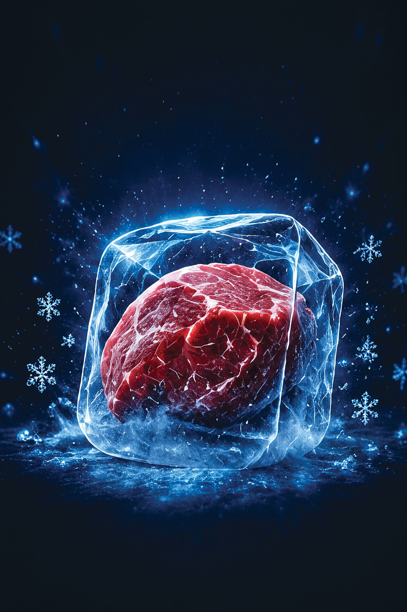
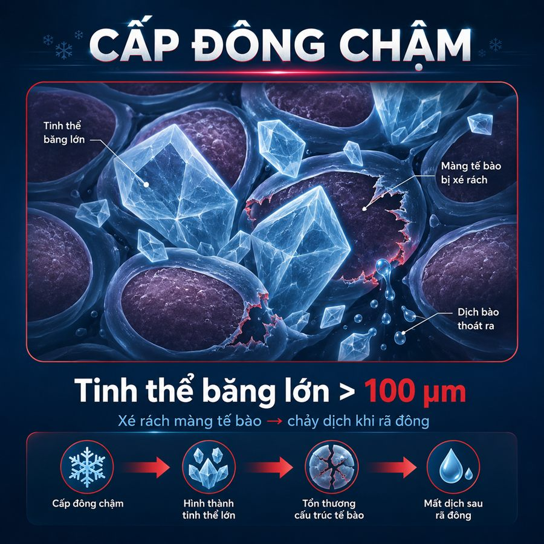
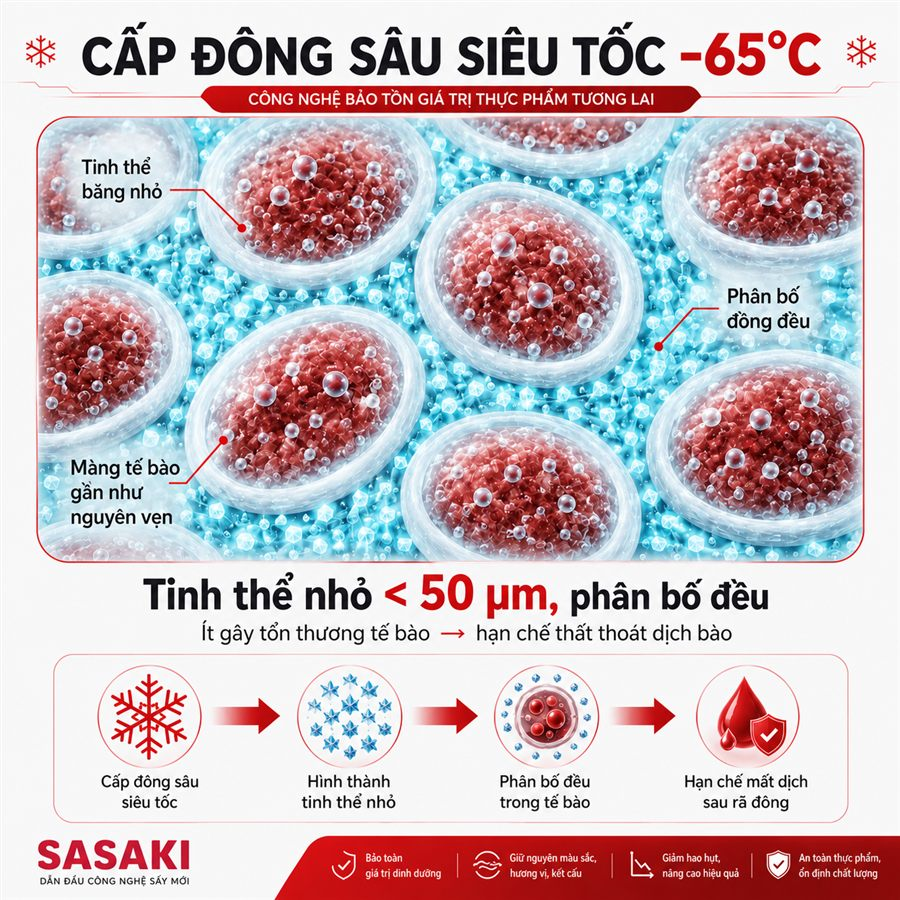
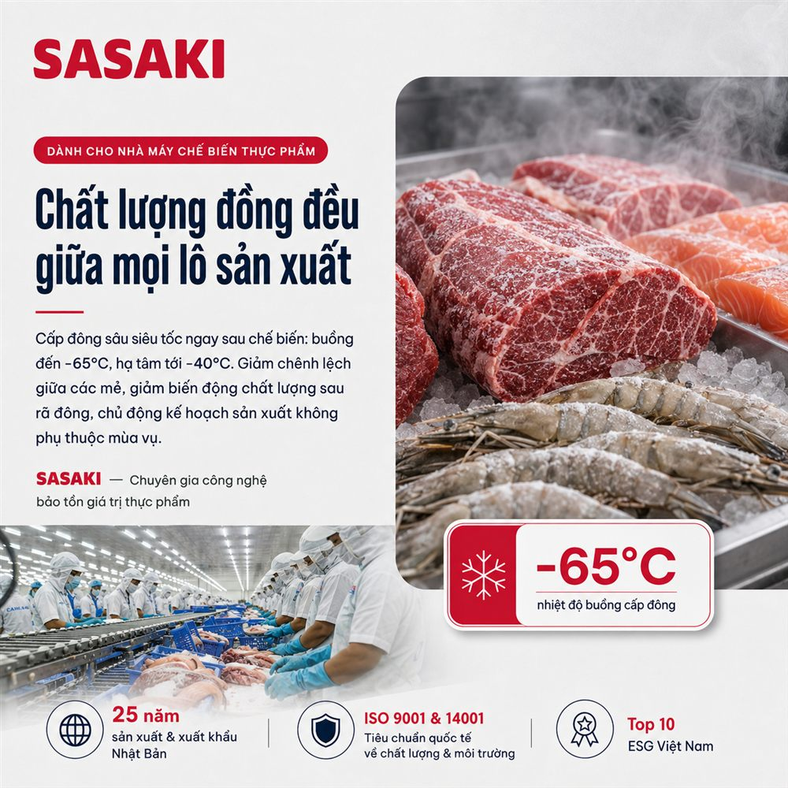
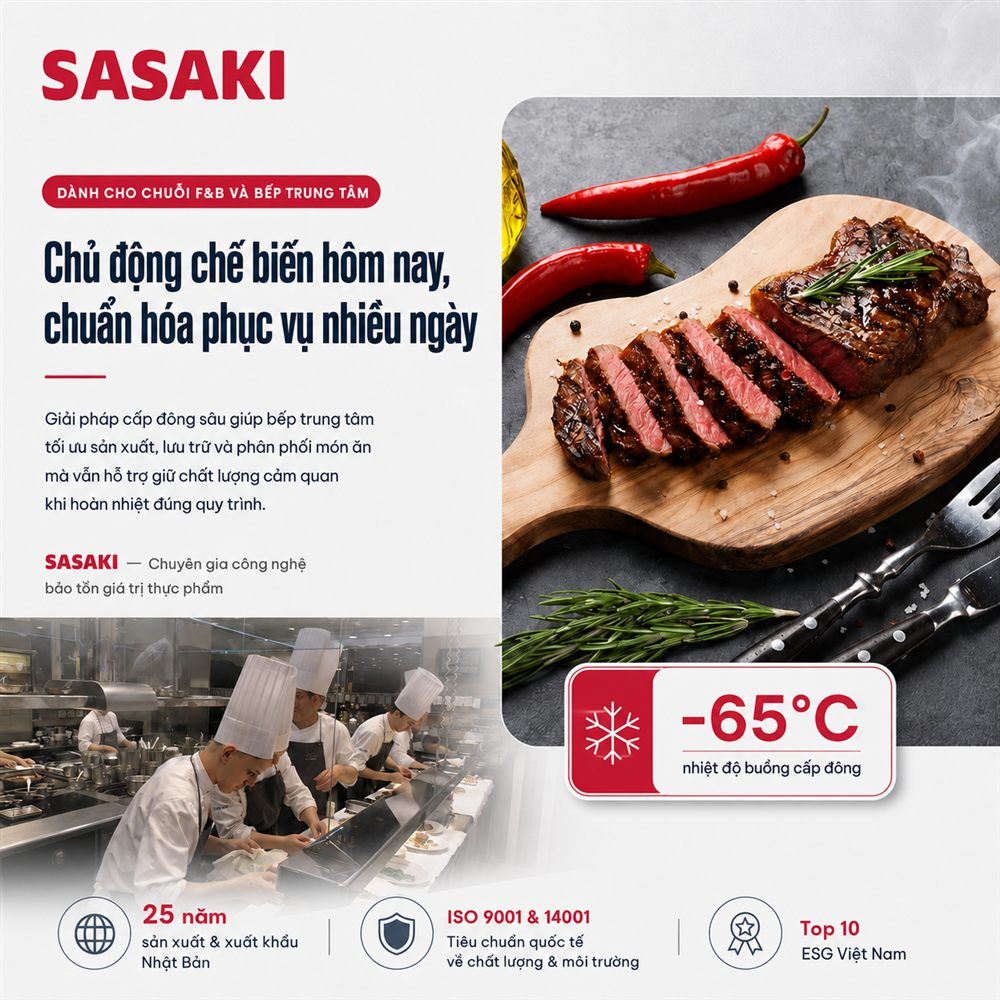
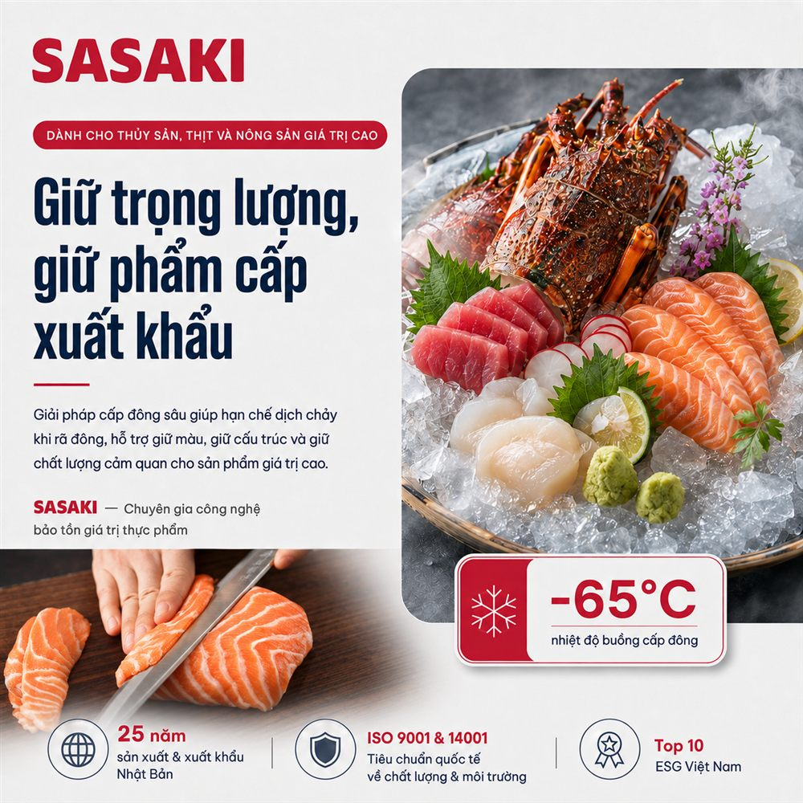

Đông sâu hôm nay
Tươi mới ngày mai
Máy cấp đông sâu siêu tốc SASAKI Shock Freezer: buồng đạt đến −65°C, hạ nhiệt tâm sản phẩm tới −40°C. Đi qua vùng kết tinh thật nhanh để hạn chế phá vỡ cấu trúc tế bào, giữ lại nhiều giá trị hơn sau rã đông.
Test trên chính sản phẩm của bạn: có báo cáo chỉ tiêu, trước khi bàn tới cấu hình máy.

Cấp đông chậm không làm hỏng hàng.
Nó làm bạn mất hàng, từng ký một
Khi hạ nhiệt chậm, nước trong thực phẩm dồn ra ngoài tế bào và kết tinh thành những tinh thể đá lớn, xé rách màng tế bào. Rã đông ra, dịch bào chảy đi, kéo theo nước, đạm hòa tan và hương vị.
Hao hụt khi cấp đông chậm
Phần khối lượng mất đi do chảy dịch và bay hơi bề mặt trong quá trình cấp đông và rã đông.
Hao hụt với cấp đông sâu siêu tốc
Đi qua vùng kết tinh nhanh, tinh thể đá nhỏ và phân bố đều nên hạn chế được thất thoát dịch bào.
Giữ lại trên mỗi tấn nguyên liệu
Chênh lệch giữa hai cách cấp đông, quy thẳng thành thành phẩm bán được. Nhân với giá bán mỗi kg là ra tiền.
Số liệu là dải điển hình theo tài liệu kỹ thuật, thay đổi theo từng loại sản phẩm, độ dày, nhiệt độ đầu vào và quy trình. Con số của riêng sản phẩm bạn chỉ xác định được bằng test thực tế.
Tất cả nằm ở kích thước tinh thể đá
Trong thịt, cá, tôm, rau củ hay trái cây đều có hàng triệu tế bào chứa nước. Khi cấp đông, nước đó chuyển thành tinh thể đá. Chính kích thước và sự phân bố của tinh thể quyết định chất lượng sản phẩm sau rã đông.


Vùng nguy hiểm −1°C đến −5°C
Phần lớn nước chuyển thành đá tại đây. Nằm càng lâu, tinh thể càng lớn. Mốc kỹ thuật thường lấy dưới 30 phút với thực phẩm mỏng; đông chậm có thể mất trên 2 giờ.
Chênh nhiệt lớn nhờ cascade 2 cấp
Buồng đạt tới −65°C thay vì −25/−35°C như hệ một cấp. Chênh nhiệt với sản phẩm lớn hơn nhiều nên nhiệt rút khỏi tâm nhanh hơn.
Đo bằng nhiệt tâm, không phải nhiệt buồng
Bề mặt đông trước, tâm đông sau. Chất lượng do nhiệt độ TÂM quyết định. SASAKI nghiệm thu bằng cảm biến nhiệt tâm PT100, không chỉ nhìn nhiệt độ buồng.
Cùng một nguyên liệu, hai kết quả thương mại
Năm khía cạnh quyết định giá bán của sản phẩm sau rã đông.
Cấp đông thông thường
- ✕Mất dịch bào, giảm khối lượng và giá trị
- ✕Mất màu, không còn vẻ tươi tự nhiên
- ✕Hương vị nhạt, thịt bở, kém hấp dẫn
- ✕Vitamin và khoáng chất suy giảm theo dịch bào
- ✕Khó cạnh tranh, buộc phải bán giá thấp
SASAKI Shock Freezer™
- ✓Hạn chế thất thoát dịch bào, giữ trọng lượng bán ra
- ✓Duy trì màu sắc tự nhiên, tươi hơn hẳn
- ✓Bảo toàn hương vị và cấu trúc, độ đàn hồi tốt
- ✓Giữ được phần lớn đạm hòa tan, vitamin, khoáng
- ✓Tăng tỷ lệ đạt phẩm cấp cao, mở đường xuất khẩu
Kết quả phụ thuộc nguyên liệu, khâu sơ chế, quy trình cấp đông, bảo quản và cách rã đông. Không công nghệ nào giữ được 100% như tươi. Mục tiêu là bảo toàn nhiều giá trị hơn so với cấp đông chậm.
Mỗi tháng bạn đang để mất bao nhiêu?
Nhập số thật của xưởng bạn. Công cụ ước tính phần khối lượng giữ lại được khi giảm hao hụt, quy ra doanh thu.
Ước tính cho xưởng của bạn
Đây là ước tính tham khảo, chỉ tính phần khối lượng giữ lại, chưa trừ chi phí điện, nhân công, bao bì và khấu hao. Mức hao hụt thực tế phụ thuộc từng loại sản phẩm, độ dày, nhiệt độ đầu vào và quy trình vận hành, chỉ xác định được bằng test mẫu thực tế.
Nhận bảng tính chi tiết cho sản phẩm của tôiBài toán của bạn nằm ở nhóm nào?
Mỗi ngành có sản phẩm, chỉ tiêu đánh giá và quy trình cấp đông riêng.
Sản phẩm ổn định giữa các lô, chủ động kế hoạch sản xuất
Nhà máy chế biến sẵn sống bằng sự đồng đều. Cấp đông sâu ngay sau chế biến giúp giảm chênh lệch chất lượng giữa các mẻ, giảm phản ánh từ khách hàng sau rã đông, và tách kế hoạch sản xuất khỏi mùa vụ nguyên liệu.
Nhờ hệ gió tuần hoàn thiết kế đều, chênh lệch giữa các vị trí khay được kiểm soát ở mức nhỏ khi xếp đúng quy cách, giúp cả mẻ đạt chuẩn cùng lúc thay vì phải chờ miếng dày nhất.

Nấu hôm nay, phục vụ tuần sau, vị không đổi
Với món đã chế biến chín như cua, tôm, ghẹ hấp, bún, phở, cơm, chè: sau khi cấp đông sâu, bảo quản đúng quy trình và hoàn nhiệt đúng cách, món ăn giữ được độ ngọt tự nhiên, mùi thơm và cấu trúc rất tốt.
Bếp trung tâm nấu tập trung một lần rồi phân phối nhiều ngày, nhiều điểm bán, giảm phụ thuộc đầu bếp giỏi ở từng chi nhánh, và giữ vị đồng nhất trên toàn chuỗi.

Giữ trọng lượng, giữ màu, đạt phẩm cấp xuất khẩu
Hải sản là nhóm xuống cấp nhanh nhất. Khả năng hạ tâm tới −40°C đáp ứng yêu cầu siêu đông cho phân khúc sashimi và hàng xuất khẩu, hạn chế biến đen và giữ màu đỏ thịt cá.
Với cá phi lê, giảm được lượng dịch chảy khi rã đông đồng nghĩa giữ được khối lượng bán ra. Cấp đông nhanh cũng là điều kiện kỹ thuật để đạt cảm quan và an toàn theo yêu cầu của các thị trường khó tính, khi nguyên liệu và quy trình nhà máy đạt chuẩn.

Giá trị trên mỗi ký cao, sai một mẻ là mất lớn
Với đông trùng hạ thảo, tổ yến tươi, sâm và nấm dược liệu, giá trị trên mỗi kilogram rất cao nên mức độ chấp nhận rủi ro rất thấp. Cấp đông sâu siêu tốc giúp giữ hình dáng, cấu trúc sợi và hạn chế tổn thương tế bào.
Đây cũng là đầu vào chất lượng cao cho quy trình sấy thăng hoa và sản xuất thực phẩm chức năng. Với nhóm này, SASAKI luôn khuyến nghị test mẫu và đo chỉ tiêu trước khi chốt cấu hình.
“Tôi đã có kho đông rồi, cần gì Shock Freezer nữa?”
Hai thiết bị làm hai việc khác nhau. Chúng bổ sung cho nhau, không thay thế nhau.
| Tiêu chí | Shock Freezer | Kho đông |
|---|---|---|
| Vai trò | Cấp đông sâu siêu tốc | Bảo quản dài hạn |
| Thời điểm | Ngay sau sơ chế / chế biến | Sau khi đã cấp đông |
| Mục tiêu | Quyết định chất lượng | Duy trì chất lượng |
| Nhiệt độ | Buồng đến −65°C, tâm ~−40°C | Duy trì −18°C đến −25°C |
| Bản chất | Hạ nhiệt cực nhanh | Giữ ổn định nhiệt độ |
Vì sao không đưa thẳng hàng nóng vào kho đông?
Kho đông được thiết kế để duy trì nhiệt độ, không phải để hạ nhiệt nhanh. Đưa thực phẩm tươi trực tiếp vào kho, quá trình hạ nhiệt diễn ra chậm, sản phẩm nằm lâu trong vùng kết tinh, tinh thể đá lớn hình thành và cấu trúc bị phá vỡ. Shock Freezer hoàn thành giai đoạn cấp đông trước, kho đông chỉ còn việc giữ trạng thái.
Máy cấp đông sâu SSKFB50P (50 kg/mẻ)
Dải sản phẩm 50 / 100 / 200 kg mỗi mẻ, đặt hàng theo nhu cầu thực tế.
| Kích thước tổng thể (D×R×C) | 1550 × 1350 × 1940 mm |
| Trọng lượng (gồm xe, khay) | 650 kg |
| Nhiệt độ cấp đông | −65 °C |
| Nguồn điện / công suất max | 380V - 3 Phase / 50Hz · 8 kW |
| Tổng công suất | 11 hp · 2 máy nén Tecumseh (Pháp) |
| Truyền nhiệt | Gió cưỡng bức |
| Hệ thống điều khiển | Màn hình cảm ứng 7" · PLC · Kết nối IoT & điều khiển từ xa |
| Vật liệu buồng | Vỏ inox SUS 304 · 3 lớp · lõi PU dày 150 mm |
| Kích thước buồng (D×R×C) | 810 × 780 × 1560 mm · thể tích 1 m³ |
| Hệ thống khay | Nhôm AL5052 đột lỗ · 12 khay · 3,02 m² |
| Xuất xứ | Thiết kế bởi SASAKI · Sản xuất tại Việt Nam |
Tùy từng giai đoạn phát triển, thông số máy có thể được điều chỉnh. Nhà xưởng cần chuẩn bị: nguồn điện 3 pha đủ tải, mặt bằng thoáng để giải nhiệt, thoát nước xả đá và khoảng hở quanh cụm dàn nóng. SASAKI khảo sát và tư vấn bố trí trước khi lắp.
Máy nằm ở xưởng bạn 10 năm, hãy tính cả chuyện sau khi mua
Điều quyết định hiệu quả đầu tư không chỉ là ngày lắp máy, mà là những lần máy cần sửa.
Linh kiện phổ thông, có sẵn tại Việt Nam
Tecumseh, Danfoss, Schneider: mua được trong nước. Khi cần thay, không phải chờ linh kiện hay kỹ sư từ nước ngoài. Thời gian dừng máy thấp, chi phí phụ tùng thấp.
Thiết kế cho khí hậu và nguyên liệu Việt Nam
Bố trí giải nhiệt dư tải cho điều kiện mùa nóng, có thể chọn giải nhiệt nước cho vùng nhiệt độ cao. Thông số hiệu chỉnh theo nông và thủy sản Việt.
Tư vấn trước, bán sau
Bắt đầu từ nguyên liệu và mục tiêu thành phẩm của bạn, không bắt đầu từ catalogue. Test mẫu và phân tích kết quả rồi mới chốt cấu hình. Rủi ro lớn nhất của khoản đầu tư này là chọn sai công suất.
26 năm kỷ luật chất lượng chuẩn xuất khẩu Nhật
Quy trình kiểm soát nội bộ từ IQC đến nghiệm thu từng máy, có biên bản. ISO 9001 & 14001, Top 10 ESG Việt Nam, Thương hiệu mạnh ASEAN 2020.
Kết quả test trên sản phẩm thực tế
Đang cập nhật hồ sơ test
SASAKI đang thực hiện loạt test mẫu trên sản phẩm thực tế của các đối tác trong ngành F&B, thủy sản và chế biến sẵn. Hồ sơ đo chỉ tiêu gồm lượng dịch chảy sau rã đông, độ giữ nước, màu sắc, cấu trúc, sẽ được công bố tại đây.
Muốn sản phẩm của bạn nằm trong đợt test này? Đăng ký test mẫu miễn phí, chúng tôi ưu tiên theo thứ tự đăng ký.
Những câu được hỏi nhiều nhất
Trả lời theo tài liệu kỹ thuật nội bộ, không cam kết điều công nghệ không làm được.
Máy cấp đông sâu siêu tốc SASAKI dùng để làm gì?
SASAKI Shock Freezer giúp hạ nhiệt và cấp đông thực phẩm siêu nhanh ngay sau chế biến hoặc thu hoạch, giúp sản phẩm nhanh chóng đi qua vùng hình thành tinh thể đá.
Ứng dụng cho hải sản, thịt, trái cây, bánh và thực phẩm chế biến sẵn, góp phần hạn chế thất thoát dịch, duy trì cấu trúc, độ mọng, màu sắc và chất lượng cảm quan tốt hơn sau hoàn nguyên.
SASAKI: đóng băng thời gian, hoàn nguyên giá trị.
Vì sao cấp đông sâu siêu tốc giúp thực phẩm giữ chất lượng tốt hơn?
Khi thực phẩm đông chậm, tinh thể đá có xu hướng phát triển lớn hơn và có thể làm tổn thương cấu trúc mô, khiến sản phẩm dễ chảy dịch và thay đổi kết cấu sau rã đông.
Cấp đông nhanh giúp rút ngắn thời gian đi qua vùng kết tinh, tinh thể đá có xu hướng nhỏ hơn, từ đó góp phần giảm thất thoát dịch, giữ độ mọng, kết cấu và màu sắc tốt hơn sau hoàn nguyên.
Những sản phẩm nào phù hợp với SASAKI Shock Freezer?
SASAKI Shock Freezer có thể ứng dụng cho rất nhiều sản phẩm:
- Hải sản: cá hồi, cá ngừ, tôm, cua, mực, sò điệp.
- Thịt: bò, steak, heo, gia cầm và thịt chế biến.
- Trái cây: xoài, dứa, sầu riêng, vải, nhãn, bơ, thanh long, dâu.
- Thực phẩm chế biến: xôi, bánh mì, bánh bao, há cảo, món kho, súp, chè, suất ăn và món ăn nhà hàng.
Mang chính sản phẩm của bạn đến SASAKI để test và xây dựng quy trình phù hợp. Đăng ký test mẫu miễn phí.
Vì sao SASAKI thiết kế buồng cấp đông sâu tới âm 65°C?
Nhiệt độ buồng sâu tới âm 65°C tạo chênh lệch nhiệt độ lớn giữa môi trường lạnh và thực phẩm, hỗ trợ lấy nhiệt nhanh và rút ngắn thời gian cấp đông.
Khi sản phẩm vượt nhanh vùng hình thành tinh thể đá, tinh thể có xu hướng nhỏ hơn, từ đó góp phần hạn chế tổn thương cấu trúc, giảm thất thoát dịch và duy trì chất lượng tốt hơn sau hoàn nguyên.
−65°C là nhiệt độ buồng cấp đông. Nhiệt độ tâm sản phẩm sẽ được lựa chọn phù hợp với từng sản phẩm và mục tiêu bảo quản.
SASAKI Shock Freezer cấp đông nhanh đến mức nào?
SASAKI Shock Freezer có khả năng hạ nhiệt và cấp đông sản phẩm rất nhanh. Với một số sản phẩm có kích thước và điều kiện phù hợp, thời gian có thể chỉ khoảng 15 đến 30 phút để đạt nhiệt độ tâm phù hợp cho bảo quản đông.
Với sản phẩm cần cấp đông sâu hơn, thời gian có thể khoảng 60 phút hoặc hơn để đạt nhiệt độ tâm khoảng −40°C, tùy đặc tính và kích thước sản phẩm.
Thời gian thực tế phụ thuộc vào loại sản phẩm, kích thước, độ dày, khối lượng, nhiệt độ đầu vào, cách xếp sản phẩm và nhiệt độ tâm mục tiêu.
Buồng cấp đông sâu tới −65°C giúp tăng tốc độ lấy nhiệt, đưa sản phẩm nhanh qua giai đoạn kết tinh và rút ngắn thời gian cấp đông.
Vì sao doanh nghiệp nên lựa chọn SASAKI Shock Freezer?
SASAKI được phát triển trên nền tảng 26 năm kinh nghiệm sản xuất công nghiệp và xuất khẩu phục vụ những thị trường có yêu cầu cao về chất lượng, trong đó có Nhật Bản.
SASAKI Shock Freezer đã được khách hàng Nhật Bản lựa chọn và đưa vào sử dụng, góp phần khẳng định năng lực của thiết bị made in Vietnam tại thị trường quốc tế.
SASAKI không chỉ cung cấp máy mà còn đồng hành cùng doanh nghiệp test sản phẩm, xây dựng quy trình cấp đông và tối ưu chất lượng sau hoàn nguyên.
SASAKI Shock Freezer: công nghệ bảo toàn giá trị thực phẩm.
Bốn câu hỏi ngắn, chúng tôi gọi lại với phương án cụ thể
Không phải form xin số điện thoại. Chúng tôi cần hiểu bài toán của bạn trước đã.
Cần trao đổi ngay? Gọi 0968 723 079 hoặc nhắn Zalo.